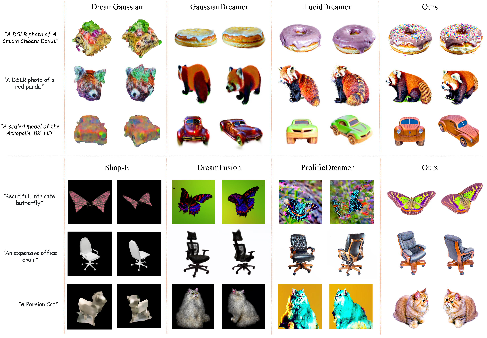
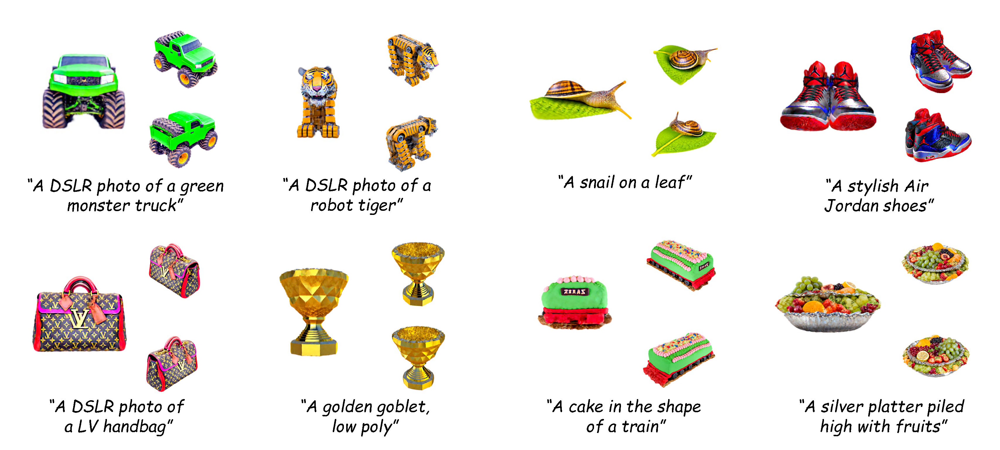

Comparisons with other methods.

Comparisons with other methods.

Additional 3D Generation Results.

Score Distillation Sampling (SDS) has emerged as a prevalent technique for text-to-3D generation, enabling 3D content creation by distilling view-dependent information from text-to-2D guidance. However, they frequently exhibit shortcomings such as over-saturated color and excess smoothness. In this paper, we conduct a thorough analysis of SDS and refine its formulation, finding that the core design is to model the distribution of rendered images. Following this insight, we introduce a novel strategy called Variational Distribution Mapping (VDM), which expedites the distribution modeling process by regarding the rendered images as instances of degradation from diffusion-based generation. This special design enables the efficient training of variational distribution by skipping the calculations of the Jacobians in the diffusion U-Net. We also introduce timestep-dependent Distribution Coefficient Annealing (DCA) to further improve distilling precision. Leveraging VDM and DCA, we use Gaussian Splatting as the 3D representation and build a text-to-3D generation framework. Extensive experiments and evaluations demonstrate the capability of VDM and DCA to generate high-fidelity and realistic assets with optimization efficiency.
@misc{cai2024dreammapping,
title={DreamMapping: High-Fidelity Text-to-3D Generation via Variational Distribution Mapping},
author={Zeyu Cai and Duotun Wang and Yixun Liang and Zhijing Shao and Ying-Cong Chen and Xiaohang Zhan and Zeyu Wang},
year={2024},
eprint={2409.05099},
archivePrefix={arXiv},
primaryClass={cs.CV},
url={https://arxiv.org/abs/2409.05099},
}